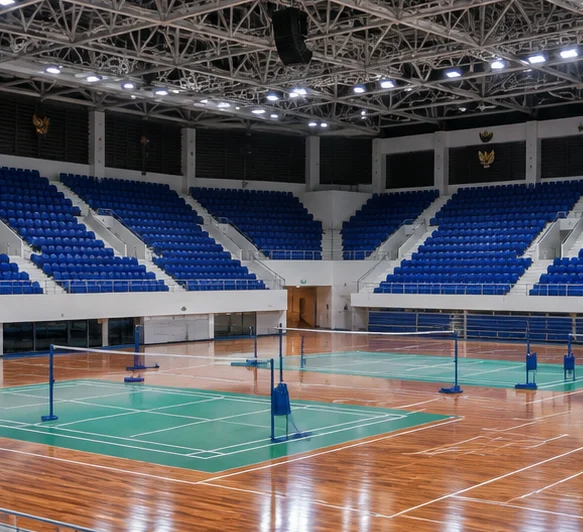
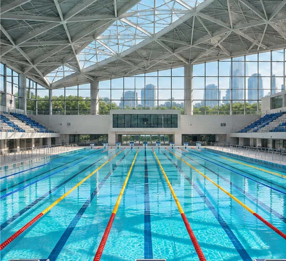

Luar ruangan
Stadion Utama
Lapangan & lintasan atletik · Senayan
Gelora Bung Karno · Senayan, Jakarta
Temukan tempat olahraga, lihat agenda, dan rencanakan kedatanganmu ke Gelora Bung Karno.
Lapangan & lintasan atletik · Senayan

Arena dalam ruangan · Senayan

Fasilitas akuatik · Senayan
Agenda contoh untuk simulasi antarmuka.
Stadion Utama
Stadion Akuatik
Cari rute ke kawasan Senayan dan lanjutkan navigasi ke venue tujuan.
Buka peta kawasan ↗Periksa akses masuk, titik drop-off, dan ketentuan parkir melalui panduan resmi acara.
Cek informasi GBK ↗